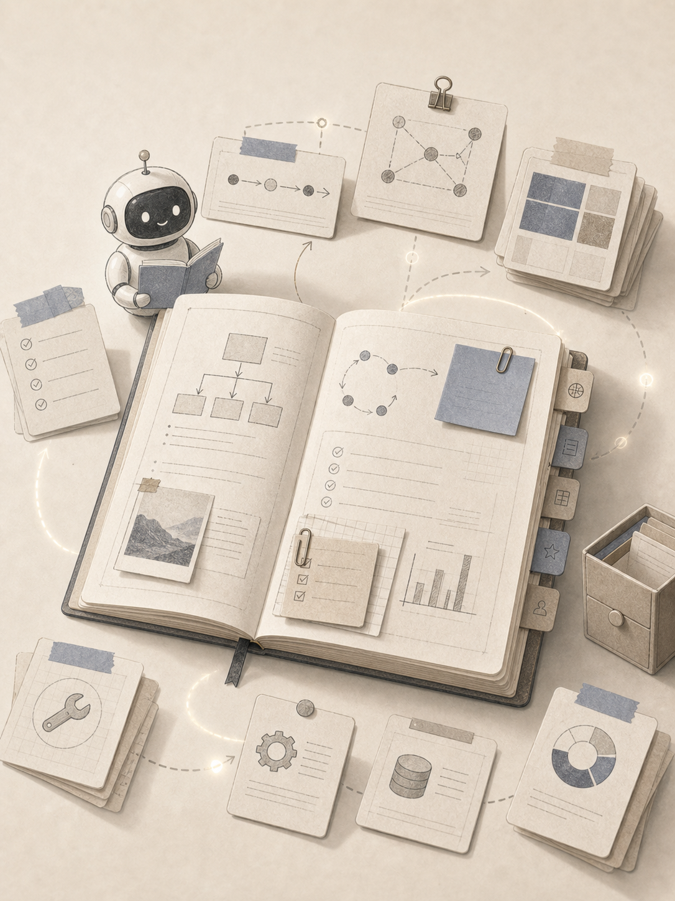

先培训
再调用
好的 Skill 把经验变成可复用标准，让 AI 知道何时触发、按什么流程做、怎样算合格。
Trigger：什么时候加载
Workflow：按什么步骤做
Gate：什么结果算过关
Portrait bitmap redraw from supplied landscape concept
常见误区
把 Skill 当成插件仓库，装得越多越迷糊。
真正重点
记录场景、流程、判断标准，让 AI 在对的时候加载。